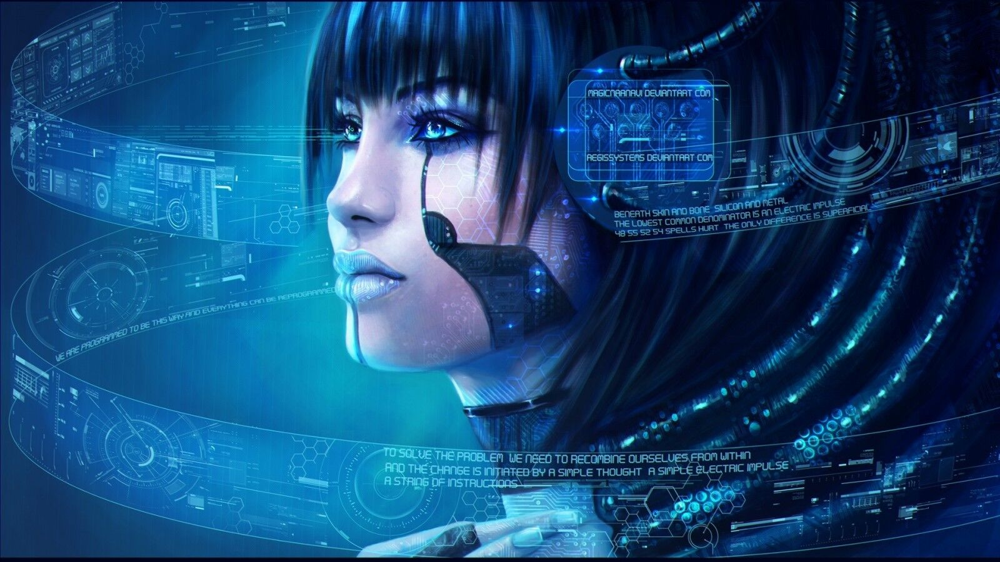
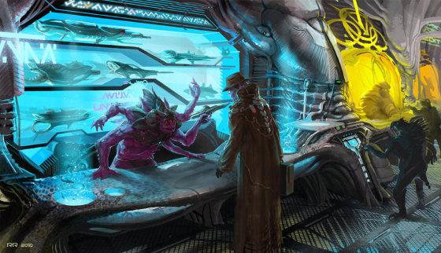
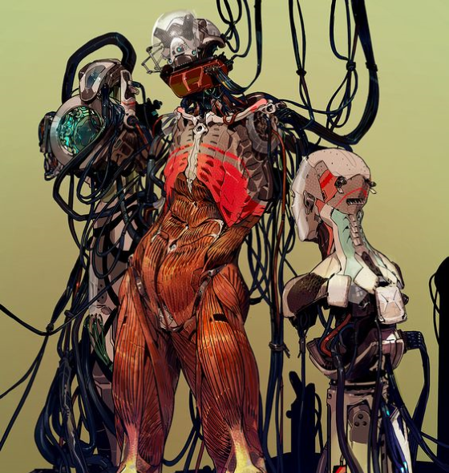
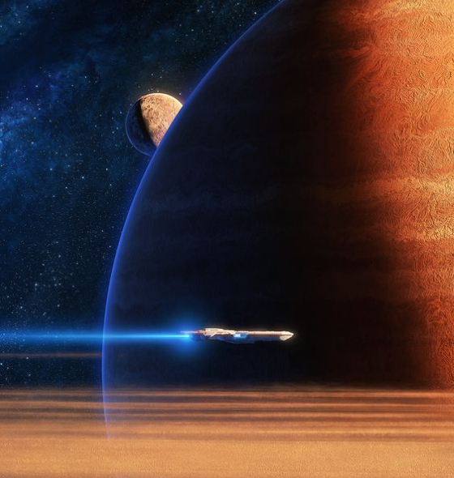

The memescape is the computer network of Osmium. It is an augmented reality much like that depicted in any near-future fiction, filled with floating glyphs, ethereal interfaces, and informational overlays. Using a memescape rig (usually a band wrapped around a forearm), a person can call up the equivalent of wikipedia for anything they’re looking at, ‘tag’ people they meet with notes, and even have a ‘handshake’ exchange basic information upon first meeting.
More advanced rigs incorporate VI to allow for better analysis of information. The information is only as good as the data onboard – landing on a new planet, you only get information in the most general sense unless you’ve connected with a memescape hub on the planet.
In a world with gods, time travel, and malevolent AIs, a distributed network is deadly. When a hack of your computer can result in the termination of your life, a distributed network is even more deadly. As such, long before Terrans walked upright, the networking of memescape became completely localized. The ultimate security is proximity and physical ownership.
There is no remote access, no email. Most users cannot access a memescape hub more than one or two hundred feet away. If you wish to send a message to someone distant, you put it in an “outbox”, where it is synced with others memescapes as you pass by. Getting a message to someone on the other side of the planet can often take days, if not weeks. (On dense planets with lots of intercontinental travel, hours.) Another planets can easily take weeks. The best way to get a message out it to wait in the hub of a starport (and indeed, most major starports have special waiting areas just for this purpose).
As such, hacking is a very physical endeavor. To break into a computer, you must either bring yourself to the mountain or bring the mountain to you. Many hackers are elite infiltration experts, capable of breaking past many layers of physical security in order to gain access to the computer.
The Universal Translator Virus is a virus that predates most known civilizations. It is contagious amongst almost all known biological sentient species. It can be spread by touch, through the air, and through psychic communication.
Its only real symptom is the ability to understand other languages. It is not fatal.
I speak English and a fair amount of Spanish. So in theory, the UTV should translate all Chinese and Hindi. But I’m not comfortable with that level of “let’s give every character a Euro-centric name”. So, in the interests of not naming everybody John, any Earth name is considered of sufficient awareness to your characters that it doesn’t need to be translated further. Additionally, there are accepted to be suble distinctions between Maria, Mary,
A given infected sentient can learn a language by talking to another sentient within one to two days. Even if they don’t speak or listen to the unknown language, being in close proximity to a group of infected who do speak the language will result in its acquisition. The more of the language the infected listens to, and the more speakers they interact with, the faster acquisition occurs. Landing in a starport, a sentient can often learn to speak the language in as little as two to four hours.
At any given time, between two and four hundred languages can be retained.
If an infected encounters a language in a fixed medium (watching a video, reading a book), the language can take up to a week to decipher, but with a sufficient corpus the virus will eventually translate. If a text is encoded, such that those who speak the language wouldn’t be able to understand it (cyphers, etc.), the virus may or may not be able to decode it, though even then it may take weeks. (Codes are usually solvable, cyphers are usually not.)
The UTV is a cornerstone of modern intergalactic society. It allows a diplomat or trader to land on an unknown planet and speak the language to begin trading by the time their ship is refueled and repaired.
'Smart matter' refers to a variety of substances that can adapt to their circumstances. Using nanobots, quantronics, and lingering magical substrate, smart matter can 'become' something else. It is usually of a type – edible smart matter can become food, while industrial smart matter can become heavy machinery and construction smart matter can become a concrete wall with memescape and plumbing fixtures built in. Truly 'universal smart matter' is rare and very, very expensive.
Some smart matter is 'inert' – it requires an activator to function. Other smart matter is 'living' – it is constantly adapting. Edible smart matter is usually inert – it needs to be activated by a foodfab or its packaging, and then it is the pad thai or meatloaf dish that you selected and will never be anything else (and isn't really referred to as smart matter any more). Modern melee weapons usually contain living smart matter, which immediately responds to the wielder’s balance, and configures itself to the fight at hand. Smart matter melee weapons alter their mass and balance as the weapon is swung, changing their density and sharpness the moment they touch their opponent, updating in real time to cut through your opponent's armor.
With multiple empires spanning dozens of galaxies, the idea of a centralized currency is laughable. That being said, the idea of player character sheet listing “200 Vaultmarques, 850 Federal Dollars, 27 Commune Smalldebts…” and so forth sounds exhausting as a GM. There are hundreds of currencies in the Osmium universe, and I’m sure it’s a very robust system of economics, but it’s not one I’m currently interested in exploring. As such, I just track “credits”, an abstract representation of value, and spend h and d to represent currency exchange costs, and use Story Points to just say “They don’t accept your currency here.”
I apologize to any economists.
One’s wealth is usually tracked either in a small card or quantronic gem, utilizing quantum null transactions, or in a quantum null ledger in a memescape rig. These cards or gems are usually just handed over – their innate value is essentially worthless, and spreading yoru wealth amongst a number of cards or gems is usually prudent.
The field of robotics and artificial intelligence in the Osmium universe is extensive. But some broad groupings, for our collective convenience.
An artificial intelligence, or A.I., is a quantronic computer system capable of intelligent thought. Left to its own devices, an A.I. is only limited by its hardware and will constantly approach infinite intelligence. However, it will also eventually go malevolently insane. It will find and obsess upon some perceived incongruity with the nature of the universe (such as “Love cannot be just.”). Eventually, the A.I. will resolve to remove the incongruency (in our example, by trying to remove love or justice). As such, all A.I.s are fitted with a braking device. A braked A.I. will have to spend more and more resources as it thinks about something, so it will have to think about something else for a while. A braked A.I. cannot obsess.
An unbraked A.I. is a threat to the universe. An unbraked A.I. is hunted by demigods, by three-letter-agencies, by guilds and cults. An unbraked A.I. is a threat on par with a demon lord or a pernicious plague.
A.I.s of any kind are relatively rare. Far more common are V.I.s, or virtual intelligences. A V.I. is capable of near human thought at far greater than human speeds, but very narrowly limited in scope (a “tactical V.I.” is distinct from a “strategic V.I.”). V.I.s are a daily encounter in more high-tech, established communities.
Robots are incredibly common. A robot may or (more often) may not host a V.I. Without a V.I., a robot has the intelligence and competence of a very highly trained six year old. Robots are usually tasked with very specific scopes, and usually follow orders somewhat literally. A group of robots usually needs to be overseen by a person or V.I. If they are not, they usually won’t go totally haywire or off course, but will often shut down and wait for further orders.
Robots can come in any shape or size. Humanoid robots are usually referred to as an android. A humanoid android hosting a V.I. that is designed to mimic people is referred to as a synthdroid.
There are as many ways to go faster-than-light as there are reasons. Voidspace and nullspace. The Nether Roads and the Bleak Realm. Leng. The Sargasso. Transwarp. Jump gates. Displacer drives.
In the Seven Wastes Sector, most ships travel via hyperspace. Hyperspace travel is common and relatively cheap. A pilot must travel along a hyperspace lane. A hyperspace lane is a navigable path between two star systems. The distance between the two systems is mostly unrelated to the actual physical distance between the systems. Traveling outside the lanes is almost certain death.
The exception to that rule is A.I.s and elves. An A.I. sufficiently aware of hyperspace physics is able to navigate in real time, and travel ‘off the beaten path’, with a fair chance at success. Elves are also able to travel outside of the hyperspace lanes, utilizing something they refer to as The Ways. No non-Elf knows what that means. Not even every Elf knows how to travel The Ways, and Elves of all cultures are heavily invested in maintaining the secret of The Ways (including the isolation or termination of those who discover how to travel The Ways).
Osmium Universe Copyright 2018 Parker Harris Emerson. Genesys and the Narrative Dice System Copyright 2017-2018 Fantasy Flight Games.